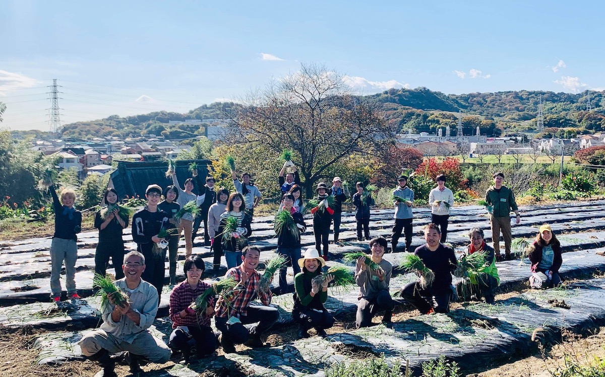

News
最新の情報
2022年3月30日
4月の活動日程（新歓情報）
4月は以下の日程・場所で活動を行います。
4/9(土) 畑作業
・東大弥生キャンパスに10時ごろ集合
・昼過ぎに解散予定
4/23(土) 玉ねぎ収穫作業
・JR東海道線二宮駅に9時半ごろ集合
・16時半ごろ解散予定
4/24(日) マルシェ
・場所は日比谷線広尾駅の付近
・参加時刻は自由(9時から15時ごろの間)
4/29(金・祝) 玉ねぎ収穫作業
・JR東海道線二宮駅に9時半ごろ集合
・16時半ごろ解散予定
4/30(土) 畑作業
・東大弥生キャンパスに10時ごろ集合
・昼過ぎに解散予定
例年、新入生以外の体験参加者も多いので、学年の区別なくぜひ体験参加をご検討ください。参加費などのお金の徴収はありませんが、交通費は各自で負担していただく形になります。申し訳ありません。
参加希望の場合は、お手数ですがLINE@の公式アカウントをご登録の上、案内される参加申し込みフォームをご記入ください。詳しい体験参加方法は、入会方法の案内などのページをご覧ください。
2022年3月17日
2022年度も新規メンバー募集中
東京大学Agrlienは2022年度も新規メンバーを募集しています。
所属大学や学年・年齢の指定はありません。首都圏の大学生・大学院生であればどなたでも入会可能です。
入会の流れなどについては以下のページをご覧ください。
こちら
また、実際の活動予定日は近日告知します。Twitterか公式LINEアカウントの案内をご覧ください。
2021年12月12日
玉ねぎの植え付けを行いました
11月下旬から玉ねぎの植え付けを行い本日完了しました。
来年の4月ごろから販売開始予定です。ぜひ楽しみにお待ちください。
2021年11月1日
マルシェ開催予定
11/6（土）・11/7（日）にマルシェを開催します。
10:00〜17:00 ところざわサクラタウン（JR武蔵野線東所沢駅より徒歩10分）
農産物・加工品を販売予定です。
ぜひ気軽にお立ち寄りください。
ところざわサクラタウン
2021年7月11日
マルシェ開催予定
7/18（日）にマルシェを開催します。
7/18 13:00〜16:00頃 祥雲寺境内（日比谷線広尾駅より徒歩3分）
農産物・加工品を販売予定です。
ぜひ気軽にお立ち寄りください。
祥雲寺
2021年5月25日
6月のマルシェの予定
マルシェを以下の日程で開催します。
6/5 9:00〜12:00頃 弘法寺境内（三田線三田駅より徒歩６分）
6/13 9:00〜12:00頃 祥雲寺境内（日比谷線広尾駅より徒歩３分）
6/19 9:00〜12:00頃 弘法寺境内（三田線三田駅より徒歩６分）
小田原産の新鮮な農産物・加工品を販売予定です。
ぜひ気軽にお立ち寄りください。
弘法寺
祥雲寺
2021年5月11日
新規メンバー・サポーター募集
新規メンバー (学生) やサポーター (社会人) の募集ページを公開しました→こちら
私たちはAgrlienの活動に共感していただける方を募集しています。まずは気軽にご質問ください。

2021年5月6日
今月のマルシェの予定
マルシェを以下の日程で開催します。
5/15 9:00〜 祥雲寺境内（日比谷線広尾駅より徒歩３分）
5/22 10:00〜 弘法寺境内（三田線三田駅より徒歩６分）
下中玉ねぎ・トマト・キュウリ・ジャム・ジュースなどの小田原産の農産物・加工品を販売予定です。
ぜひ気軽にお立ち寄りください。
2021年5月4日
FMヨコハマのLovely Dayに出演しました
FMヨコハマのLovely Dayの「藤田優一の街角リポート」に出演しました。
リポーターの藤田優一さんに畑までお越しいただき、下中玉ねぎの紹介をさせていただきました。
 下中玉ねぎはオンラインショップで販売中です（https://agrlien.stores.jp/）
下中玉ねぎはオンラインショップで販売中です（https://agrlien.stores.jp/）
2021年4月14日
マルシェを開催予定
マルシェを以下の日程で開催します。
新玉ねぎを始めとする小田原のお野菜などを販売予定です。ぜひお立ち寄りください。
4/18 9:00〜 祥雲寺境内（日比谷線広尾駅より徒歩３分）
4/24 11:00〜 弘法寺境内（三田線三田駅より徒歩６分）
2021年4月14日更新
新規メンバー募集！4月5月の体験受付中
新年度も新規メンバーを絶賛募集中です。
4月の活動は以下の日程で予定しています。
ご都合の合う日があればぜひ気軽にご参加ください。
4/10 畑作業（小田原）
4/17 畑作業（小田原）
4/18 マルシェ（広尾）
4/24 マルシェ（三田）
5/9 農作業（小田原）NEW
見学希望の連絡は公式LINEアカウントを登録の上、よろしくお願いします。
LINE：https://lin.ee/4DyRtg7zK
2021年3月10日
日本イタリア料理協会さんのYoutubeチャンネルで紹介して頂きました
遅ればせながらの報告で大変恐縮ですが、日本イタリア料理協会さんのyoutubeチャンネルにて、玉ねぎの定植に来ていただいた際の様子を紹介していただいています。この時に植えた玉ねぎは春の販売に向けて現在絶賛生育中です。
日本イタリア料理協会のみなさま、素敵な動画を大変ありがとうございました。日本イタリア料理協会さんのyoutubeチャンネルは、他にも役立つ動画が盛り沢山のチャンネルです。ぜひ以下のリンクからご覧ください！
リンクはこちら：ACCIイタリアンシェフ大集合!
2021年2月23日
YoutubeにPVをアップしました
Youtueに活動の様子をまとめたPVをアップしました。
https://youtu.be/2A_oilZlO64
学年・大学問わず新規メンバーを常時募集しています。随時見学も受け入れていますので、興味のある方は以下のメールアドレスまでご連絡ください。
yayoi.dining@gmail.com
2020年11月17日
駒場祭 ライブ配信！
2020年11月21〜23日に開催される第71回駒場祭にて、東京大学Agrlienはライブ配信企画を行います。
Youtube Liveで配信を行います。当日は以下の駒場祭公式HPよりご参加ください。
https://bit.ly/3f6lCqE
詳細は以下の通りです。
日程：11/22（日）
時間：14:00〜15:00
タイムライン：
14:00 東大農学部＆Agrlienの紹介
14:10 農学研究紹介①
「散歩が楽しくなる話〜雑草をテーマにした農学研究をご紹介」
14:30 休憩＆Agrlienの活動紹介
14:40 農学研究紹介②
「有機農業を科学する〜土－微生物－作物間ネットワークの可視化に向けた研究」
15:00 Closed
日程：11/23（月）
時間：14:00〜15:00
タイムライン：
14:00 東大農学部＆Agrlienの紹介
14:10 農学研究紹介①
「散歩が楽しくなる話〜雑草をテーマにした農学研究をご紹介」
14:30 休憩＆Agrlienの活動紹介
14:40 農学研究紹介②
「有機農業を科学する〜土－微生物－作物間ネットワークの可視化に向けた研究」
15:00 Closed
2020年2月22日
新メンバー，随時募集中！
東京大学Agrlienは，新メンバーを随時募集しています。春から大学生になる方も，大学院在学中の方でも，大学・学部問わず参加いただけます！
活動を見学してみたいという方は，メール（yayoi.dining@gmail.com）かTwitter（@agrlien）のDMまでご連絡ください。

2019年9月22日
マルシェ出店予定
10月6日に小田原市で開催されるイベント「お寺×光の祭典〜令和に始まる、寺まちへの歩み〜」にて、東京大学Agrlienはマルシェを出店いたします。イベントは参加無料ですので、ぜひお越しください。
日時 ：2019年10月6日16時〜19時半
会場 ：徳常院（神奈川県小田原市本町3-13-11）
無量寺（神奈川県小田原市本町3-13-53）
アクセス：小田原駅東口から徒歩14分
箱根登山バス箱根方面行き「本町」停留所下車徒歩4分
サイト ：https://www.odawara-jc.or.jp/2019/report/2019100601/
備考 ：イベントは事前申し込み制です。上記URLをご参照ください。
2019年8月10日
下中たまねぎ 販売終了のお知らせ
小田原の特産品「下中玉ねぎ」の販売を終了いたしました。
ご購入いただき誠にありがとうございました。
2019年5月22日
下中たまねぎ 郵送販売のご注文受付中
東京大学Agrlienが禅龍寺農園で栽培した、小田原の特産品「下中たまねぎ」を郵送販売しております。甘みが強く、生でも食べられる新たまねぎです。→詳しくはこちら
2019年5月20日
五月祭マルシェ
5月18日・19日に行われた第92回東京大学五月祭にて、禅龍寺農園で栽培した「下中たまねぎ」の販売を行いました。「たまねぎ塩焼きそば」と「たまねぎステーキ」の２品を提供し、沢山の方に召し上がっていただきました。

2019年5月16日
下中たまねぎ 八彩白山店で販売中
東京大学Agrlienが禅龍寺農園で栽培した、小田原の特産品「下中たまねぎ」が東京都文京区白山の「八彩」で販売中です。大ぶりで甘い特別なたまねぎをぜひお買い求めください。